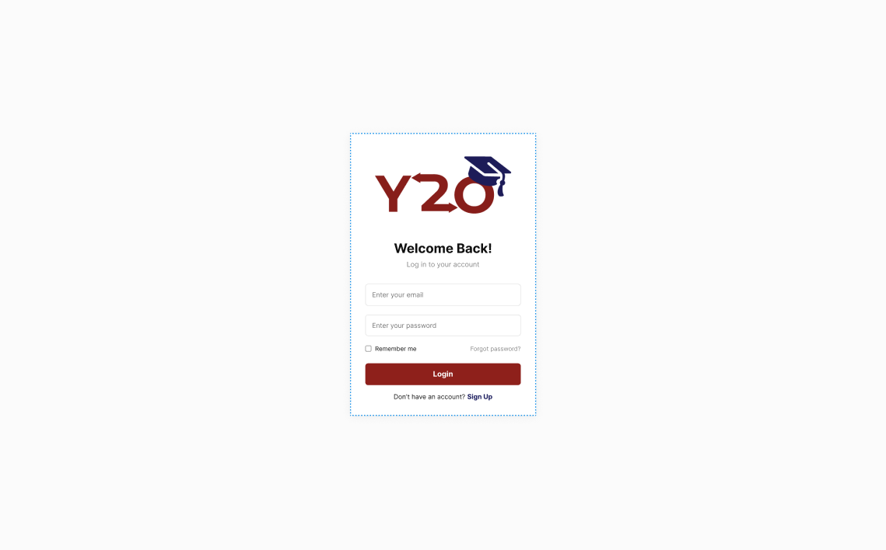
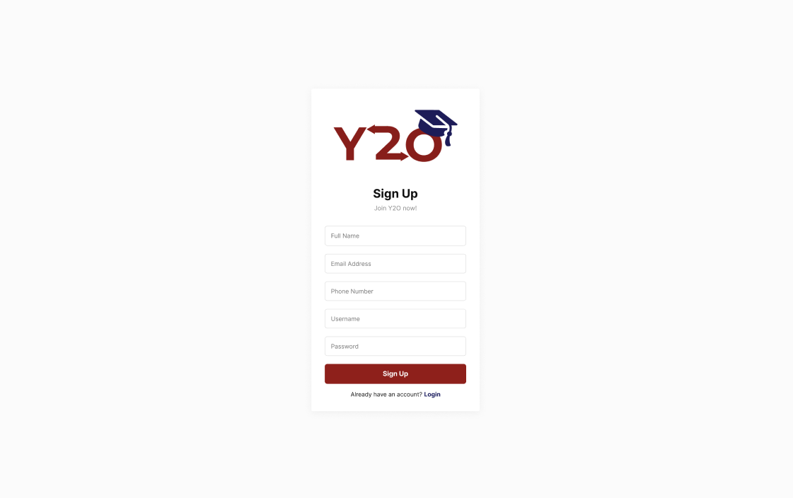
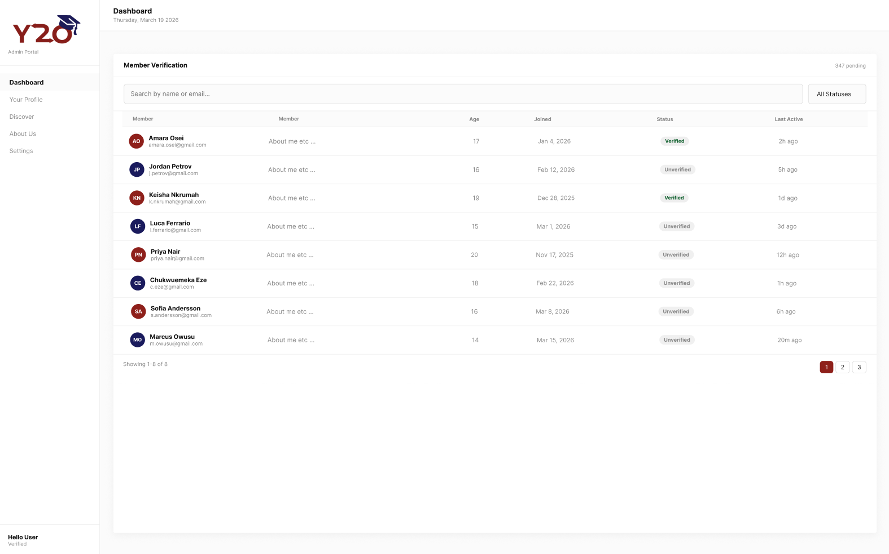
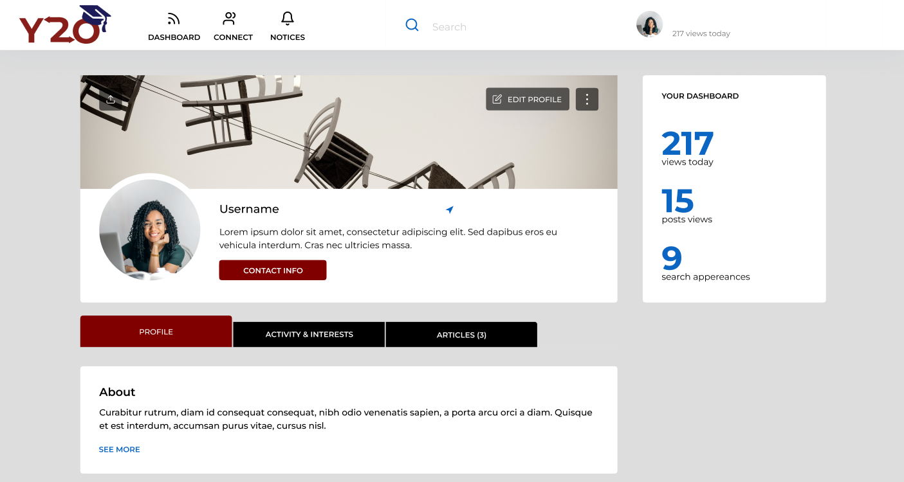
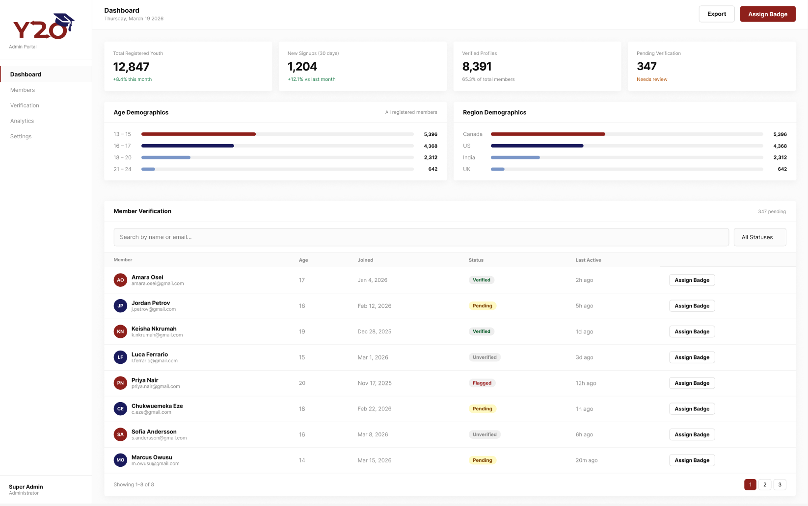

Names
The 404s
Shreeya, Tony, Omar, Murad
Vinay Paramanand and Pankaj Pant from Youth2Opportunities (a startup)
Youth to Opportunities
Purpose
The main purpose of Youth2Opportunities (Y2O) is to assist young people between the age of 12 and 22 to widen their knowledge in academics and potential future pathways. It serves as a learning platform where students are freely able to develop new skills, provides a safe environment to learn, and create their digital portfolios.
Data Description
User
Manages account authentication for student users. Stores profile details, login credentials, and password reset token information.
The entire table was revised to ensure that field names, data types, and constraints align with the SQL database, and the accompanying notes were updated accordingly.
| Field | Type | Constraints | Notes |
|---|---|---|---|
id |
int | Primary Key, Auto-increment | Unique identifier for every student user account |
full_name |
varchar | Required | Stored as "First Last", the sign-up form collects them as separate fields and the server joins them before insert |
username |
varchar | Required, Unique | Used for login |
email |
varchar | Required, Unique | Used for login and password reset |
phone |
varchar | Required | Contact number in 123-456-7890 format |
password_hash |
varchar | Required |
Hashed with password_hash(), never stored in
plain text
|
reset_token |
varchar | — | Temporary token used during the password-reset flow |
reset_token_expires |
datetime | — | Expiry timestamp for the reset token (1 hour after creation) |
created_at |
timestamp | Auto-generated | Records when the account was registered |
User Profiles
Builds the digital portfolio and manages the privacy needs of young users. Contains personal details, education info, and parental consent verification status.
I made changes to User Profiles because I wanted to create a more general and clear idea as for the default page for the user to change it up to represent them.
| Field | Type | Constraints | Notes |
|---|---|---|---|
id |
int(11) | Primary Key, NOT NULL | Unique identifier for each profile |
name |
varchar(100) | — | Full name of user |
headline |
varchar(255) | — | Current Profession |
location |
varchar(100) | — | Location of user |
about |
text | — | Short description of the user |
profilePic |
varchar(255) | Default: 'Placeholder.jpg' | Path to profile image |
status |
varchar(20) | Default: 'Pending' | Controls user's current status |
profile_pic |
varchar(500) | — | Path to profile image (updated) |
Projects
Allows users to showcase hands-on work and practical skills to potential mentors or employers. Stores project titles, descriptions, and external links or media demonstrating a student's achievements.
As for the reason why I made these changes was because I wanted to make it more clearer.
| Field | Type | Constraints | Notes |
|---|---|---|---|
id |
int | Primary Key, NOT NULL | Unique identifier for each project entry |
user_id |
int | Foreign Key → User | Links the project to its author |
title |
String | Required | Short project name shown on the portfolio |
project_name |
varchar(255) | NOT NULL | Name of the project |
description |
text | NOT NULL | Detailed explanation of the project |
project_link |
String | — | External URL (e.g., GitHub repo, live demo) |
created_at |
Timestamp | Auto-generated | Records when the project was added |
Education
Stores education history for each user so they can showcase their academic background on their portfolio.
I created an Education table because I wanted to make a section where users are able to show what kind of education they received.
| Field | Type | Constraints | Notes |
|---|---|---|---|
id |
int | Primary Key, NOT NULL | Unique identifier for each education entry |
user_id |
int | Foreign Key, NOT NULL | Links the education to a specific user |
title |
varchar(255) | NOT NULL | Details about the education or achievements |
created_at |
Timestamp | Auto-generated | Records when the entry was added |
Functions Performed by the app
A more detailed update on the login and registration dashboard functionality, including specific references to functions, database tables, and related components to provide greater clarity.
| Functionality | Implementation |
|---|---|
| Login |
- SELECT the user row from users_y2o matching the
submitted username or email (users can log in with either).
- Verify the submitted password against the stored hash using password_verify(). If it doesn't match, return an
"Invalid credentials" error.
- On success, start a PHP session, regenerate the session ID to prevent session fixation, and store the user's ID and username in $_SESSION so they stay logged in across pages on the
dashboard.
|
| Sign Up |
- INSERT a new row into users_y2o with the user's
first name, last name, username, email, phone, and hashed
password. Before inserting, run a SELECT to check that the
username and email aren't already taken. If either is in use,
return a friendly error and block the registration.
- Hash the password with PHP's password_hash() before
storing.
- Validate all fields server-side (name format, email format, username length) using filter_var and regex patterns,
so the check doesn't rely on the browser alone.
|
| Logout |
Destroy the PHP session (session_unset() +
session_destroy()) so the user is signed out and
protected session data is cleared.
|
| Password Reset |
- SELECT the user by email to confirm the account exists, then
generate a secure random reset token with
random_bytes() and UPDATE the user's row to store the
token with a 1-hour expiry.
- When the user submits a new password on the reset page, SELECT the user matching the token (and where the token hasn't expired), then UPDATE the row with the new hashed password and clear the token fields. |
| Dashboard |
- SELECT: Other user profile and a short description from their
about page (Clickable to view others profiles)
- Includes buttons to your own profile |
| Update Profile |
- Generate a session using PHP to verify user
- SELECT: Find the user's information on the database - UPDATE: Users allowed to edit prebuilt sections and add their own descriptions |
| Admin + Admin Login |
- SELECT: finds
specific users based on the statuses, names, etc
and displays them
- UPDATE: Can add to profiles statuses like verified, updates the count on the boxes |
Roles of Team Members
| Team Member Name | Page responsibility |
|---|---|
| Shreeya | Main Login/Registration page |
| Tony | Dashboard page |
| Omar | Profile page and editor |
| Murad | Admin Page + Admin Login |
Wireframes



Changes include missing elements for age, account creation, and last login. Small differences in user interface including change to using the small logo, different coloring for status, bubble wrapping users displayed on the dashboard instead of table format. The sidebar only reflects current pages available, so home page (dashboard) and profile page.

Initially, we planned to design it similar to LinkedIn's profile editor section. However, after presenting it to our client, they suggested making it more distinct to avoid direct resemblance. As a result, the final profile page in our last increment differs from the original prototype wireframe.

Due to time constraints, we were unable to implement graphs on the admin portal, so we instead used numbered boxes to display the key statistics.
The increments
This first increment due for April 7th focuses on deploying the application to the McMaster server, establishing the core user interface, and ensuring that basic backend routing is functional across the platform.
For the final increment due for April 19th, the team will transition to refining the UI, ensuring consistent design between the pages, establishing fully functional backend routing for all features, and successfully connecting the platform to the database to ensure persistent, dynamic data storage.
| Team Member | Feature Focus | Description |
|---|---|---|
| Shreeya | Login page | Functioning login and signup forms. This includes basic client-side input validation (e.g., password strength and length checks) and successful routing to the main dashboard upon submission. |
| Tony | User Dashboard | A user feed that displays a brief preview of multiple users in a carousel-type format, including a couple of sentences from their "About" sections. It will also include a sidebar navigation menu linking to the user's personal profile. |
| Omar | Profile page and editor | A page structured to display an "About" section, projects section, and user skills. It will feature a functional file upload button that successfully selects a file and logs the data to the console. |
| Murad | Admin Portal + Admin Login Page | A dashboard displaying high-level platform analytics (e.g., total registered youth, new signups, verified profiles, pending verification, location demographics). It will include the initial UI allowing admins to manage specific statuses, such as a "Verified" badge, to user profiles. An admin login page was also introduced to streamline access for admins managing the dashboard. |
Client Feedback
During our initial consultation with the Youth2Opportunities (Y2O) team, their primary requirements were straightforward: a secure login/registration flow and a customizable user profile page for the youth. They granted us significant creative freedom regarding the design and user experience.
When we presented our ideas, which included adding a centralized User Dashboard to view peers and an Admin Portal for Y2O staff, they were highly receptive. We plan to collect further, formal feedback on the first coded iteration during Week 12, prior to Lab 12.2 to meet the deadline for the first increment.
We didn't have the chance to show the final product to the client yet, we plan to on Sunday April 26th.